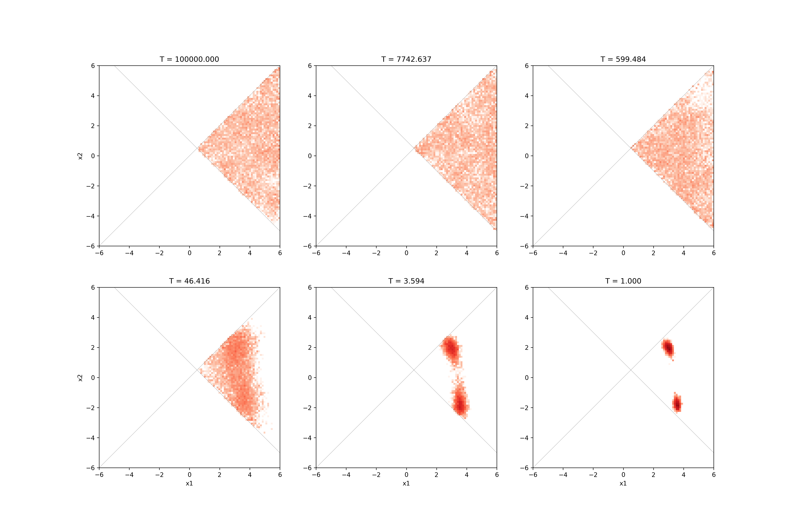

Replica Exchange Monte Carlo search with limitation#
This tutorial describes the constraint expression function that can be set in the [runner.limitation] section.
As an example, the replica exchange Monte Carlo method is applied to the minimization problem of Himmelblau function with constraints.
Sample files location#
Sample files are available in the sample/analytical/limitation directory.
This directory contains the following files.
input.tomlInput file for the main program.
ref.txtFile to check if the calculation is executed correctly (answer to obtain by performing this tutorial).
do.shScript prepared to run all the calculations of this tutorial at once.
In the following, we will explain these files, and then introduce the actual calculation results.
Input files#
The following input.toml is an input file for the main program.
[base]
dimension = 2
output_dir = "output"
[algorithm]
name = "exchange"
seed = 12345
[algorithm.param]
max_list = [6.0, 6.0]
min_list = [-6.0, -6.0]
step_list = [0.3, 0.3]
[algorithm.exchange]
Tmin = 1.0
Tmax = 100000.0
numsteps = 10000
numsteps_exchange = 100
[solver]
name = "analytical"
function_name = "himmelblau"
[runner]
[runner.limitation]
co_a = [[1, -1],[1, 1]]
co_b = [[0], [-1]]
The [base] section specifies the parameters of the main program.
dimensionis the number of variables to be optimized, and in this case, it is 2.output_diris the name of the directory for the output files.
[algorithm] section is the section to set the search algorithm.
nameis the name of the search algorithm. In this case, specify"exchange"for the replica exchange Monte Carlo method.seedis the seed given to the pseudo-random number generator.
[algorithm.param] sub-section specifies the range of parameters to be optimized.
min_listandmax_listspecify the lower bound and upper bound of the parameter space, respectively.step_listis the step length of one MC update (standard deviation of the Gaussian distribution).
[algorithm.exchange] sub-section specifies the hyperparameters of the replica exchange Monte Carlo method.
numstepsis the number of Monte Carlo updates.numsteps_exchangespecifies the number of Monte Carlo updates between attempts of temperature exchange.TminandTmaxare the lower and upper limits of the temperature, respectively.If
Tlogspaceistrue, the temperature is divided equally in log space. This option is not specified in thisinput.tomlbecause the default value istrue.
[solver] section specifies the solver used internally in the main program.
In this case, the analytical solver is specified.
The analytical solver takes an extra parameter function_name that specifies the name of the function. In this case, the Himmelblau function is specified.
[runner] section has a sub-section [runner.limitation], and in this section, the constraint expression is set.
In the current version, the constraint expression is defined as \(Ax+b>0\) where \(x\) is the \(N\)-dimensional input parameter, \(A\) is an \(M \times N\) matrix, and \(b\) is an \(M\)-dimensional vector.
\(A\) and \(b\) are set by co_a and co_b, respectively.
For details, see the [limitation] section in the input file in the manual.
In this case, the following constraint is imposed:
Calculation#
First, move to the folder where the sample file is located. (It is assumed that you are directly under the directory where you downloaded this software.)
$ cd sample/analytical/limitation
Then, execute the main program as follows. The calculation will end in about 20 seconds on a normal PC.
$ mpiexec -np 10 odatse input.toml | tee log.txt
In this case, a calculation with 10 MPI parallel processes is performed.
When using Open MPI, if the number of processes to be used is greater than the number of available cores, add the --oversubscribe option to the mpiexec command.
After execution, the output folder is generated, and a subfolder for each MPI rank is created in it.
Each subfolder contains the results of the calculation.
trial.txt file, which contains the parameters and objective function values evaluated at each Monte Carlo step, and result.txt file, which contains the parameters actually adopted, are created.
Both files have the same format: the first column is the step number, the second is the walker number within the process, the third is the temperature, the fourth is the value of the objective function, and the fifth and subsequent columns are the parameters.
The following is the beginning of the output/0/result.txt file:
# step walker T fx x1 x2
0 0 1.0 187.94429125133564 5.155393113805774 -2.203493345018569
1 0 1.0 148.23606736778044 4.9995614992887525 -2.370212436322816
2 0 1.0 148.23606736778044 4.9995614992887525 -2.370212436322816
3 0 1.0 148.23606736778044 4.9995614992887525 -2.370212436322816
Finally, the best parameter and the rank and Monte Carlo step at which the objective function is minimized are written to output/best_result.txt.
nprocs = 10
rank = 2
step = 4523
walker = 0
fx = 0.00010188398524402734
x1 = 3.584944906595298
x2 = -1.8506985826548874
do.sh is available as a script to run all the calculations at once.
Additionally, in do.sh, best_result.txt is also compared with ref.txt.
#!/bin/bash
set -e
export PYTHONUNBUFFERED=1
export OMPI_MCA_rmaps_base_oversubscribe=1
mpiexec -np 10 python3 ../../../src/odatse_main.py input.toml
resfile=output/best_result.txt
echo ${PYTHON:-python3} ../../../tests/test_utilities/diff_res_mc.py $resfile ref.txt
res=0
${PYTHON:-python3} ../../../tests/test_utilities/diff_res_mc.py $resfile ref.txt || res=$?
if [ $res -eq 0 ]; then
echo TEST PASS
true
else
echo TEST FAILED: $resfile and ref.txt differ
false
fi
python3 hist2d_limitation_sample.py -p 10 -i input.toml -b 0.1
python3 hist2d_limitation_sample.py -p 10 -i input.toml -b 0.1 --layout 2,3 --tlist 9,7,5,3,1,0
python3 hist2d_limitation_sample.py -p 10 -i input.toml -b 0.1 --layout 2,3 --tlist 9,7,5,3,1,0 --format pdf
echo "done."
Visualization of the calculation result#
By visualizing the result.txt file, we can confirm that the search is performed only over coordinates that satisfy the constraint expression.
hist2d_limitation_sample.py is prepared to visualize the 2D parameter space.
This generates a histogram of the posterior probability distribution in the <execution date>_histogram folder.
The histogram is generated using the data obtained by discarding the first 1000 steps of the search as a burn-in period.
$ python3 hist2d_limitation_sample.py -p 10 -i input.toml -b 0.1
The figure shows the posterior probability distribution and the two lines \(x_{1} - x_{2} = 0\), \(x_{1} + x_{2} - 1 = 0\), and it is confirmed that the search is restricted to the range where \(x_{1} - x_{2} > 0\), \(x_{1} + x_{2} - 1 > 0\).

Fig. 9 Plots of sampled parameters and probability distribution. The horizontal and vertical axes denote x1 and x2, respectively.#